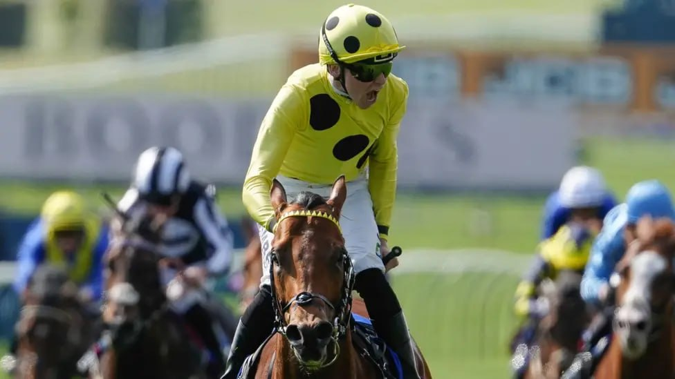

Bow Echo conquista las 2000 Guineas y mantiene su carrera invicta en Newmarket
Bow Echo ganó este sábado las 2000 Guineas Stakes, primera clásica del calendario británico, en el hipódromo de Newmarket. El potro de tres años, entrenado por George Boughey y montado por Billy Loughnane, se impuso a Gstaad, segundo, y a Distant Storm, tercero, sobre la milla del Rowley Mile en una prueba que…

Bow Echo ganó este sábado las 2000 Guineas Stakes, primera clásica del calendario británico, en el hipódromo de Newmarket. El potro de tres años, entrenado por George Boughey y montado por Billy Loughnane, se impuso a Gstaad, segundo, y a Distant Storm, tercero, sobre la milla del Rowley Mile en una prueba que reunió a 14 participantes tras la baja de Alparslan. El cronómetro oficial detuvo la prueba en 1 minuto y 35,59 segundos, registro que la organización catalogó como rápido respecto al patrón de la pista.
Cuerpo
La victoria mantiene invicto al hijo de Night Of Thunder, que llegaba a la cita con tres victorias en otros tantos arranques durante su campaña juvenil. Su última actuación había sido en septiembre, en las Royal Lodge Stakes (Grupo 2), disputadas sobre el mismo recorrido y distancia que la clásica que acaba de ganar. La elección de afrontar las 2000 Guineas como primera salida del año, sin carrera de preparación previa, había sido motivo de debate entre los aficionados durante toda la primavera.
Bow Echo defendía los colores del jeque Mohammed Obaid Al Maktoum, propietario y criador del ejemplar, fallecido el pasado mes de diciembre. La decisión de mantener al potro en el calendario clásico siguió expresamente, según había explicado George Boughey en la previa, los deseos manifestados por el propio jeque antes de su muerte. La carrera, por tanto, lleva un componente sentimental añadido para el equipo de cuadras de Boughey en Newmarket.
El triunfo supone para George Boughey su primera victoria en las 2000 Guineas, una de las cinco clásicas inglesas. Para Billy Loughnane, jinete de 19 años considerado uno de los grandes valores de la nueva generación británica, el éxito representa también su primer Grupo 1 sobre milla en una clásica de Newmarket.
En el plano genealógico, Bow Echo añade un capítulo significativo al palmarés de su padre. Night Of Thunder ganó esta misma carrera en 2013, hace trece años, y ahora vuelve a ver a un descendiente directo cruzar el poste como vencedor del clásico que le dio su mayor triunfo deportivo. Su madre, Aristocratic Lady, fue una hija de Invincible Spirit que se acreditó tres victorias sobre seis furlongs y a la que se atribuye un rating Timeform de 97 puntos. Aristocratic Lady murió el año pasado, por lo que Bow Echo es uno de los pocos productos vivos de la yegua y, hasta hoy, el más sobresaliente.
Detrás del ganador, Gstaad firmó un segundo puesto que respalda la decisión de su entorno de pagar las 30.000 libras de suplementación necesarias para inscribir al ejemplar pocos días antes del cierre. El potro, que había quedado fuera del listado original por un fallo administrativo, devolvió esa apuesta con una actuación competitiva sobre el tramo final. Distant Storm completó el cajetín de honor en tercera posición.
Las cuotas finales de la apuesta ofrecieron pocas sorpresas en la cabeza: Bow Echo partió a 9/2, Gstaad y Distant Storm cotizaban ambos a 3/1. La prueba tenía £525.000 en premios garantizados.
— Redacción de Galope al Día